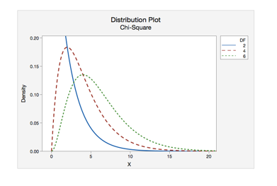
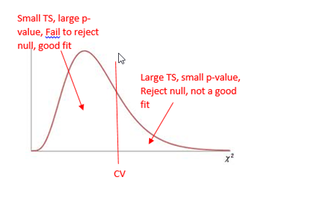
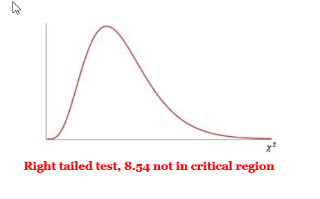
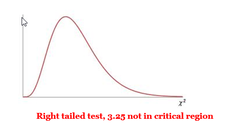

Unit 4 Hypothesis Testing
10.1 Goodness of Fit
Test the hypothesis that an observed frequency distribution fits or conforms to a claimed distribution
Notations:
- O - Observed Frequency of a category is the frequency for the category observed in the sample data.
- E - Expected Frequency of a category is the claimed frequency for the category – a calculated value.
- K - Number of Different Categories or outcome
- n - Total Number of Trials (the sample size)
Requirements:
- The data have been randomly selected
- The sample data consist of frequency counts for each of the different categories.
- For each category, the expected frequency is at least 5. (The expected frequency for a category is the frequency that would occur if the data actually have the distribution that is being claimed. No requirement that the observed frequency for each category must be at least 5.)
Test Statistic for a Goodness of Fit Test
We will get this value from technology, but it can be calculated by hand:
Calculating Expected Frequencies
Expected frequencies are equal: \(E=n / k\)
Expected frequencies are not equal: \(E=np\) (for each category)
\(\chi^{2}=\sum \frac{(O-E)^{2}}{E}\)
Null and Alternative Hypotheses
- Null, \(H_0\)
- The distribution of ___________ is the same as the expected distribution.
- For each category, the observed value is equal to the expected value.
- Mathematically:
- \(p_{1}=p_{2}=p_{3} \dots\) for an expected uniform distribution
- \(p_1=\_\_\_\_\_\_\_,\;p_2=\_\_\_\_\_\_\_,\;p_3=\_\_\_\_\_\_\_...\) for any non-uniform expected distribution.
- Alternative, \(H_A\)
- The distribution of _____________ differs from the expected distribution.
- In the categories, at least one observed value is NOT equal to the expected value.
Using Technology for a Goodness of Fit Test:
- Identify the critical chi-squared value, \({\chi^2}_{CV}\) (called \({\chi^2}_{O}\) in your text) in order to shade your curve.
- \(DF = k - 1\)
- Area to the right (always a right-tail test, use ≥) is the significance level

- Run the test and record the important information: Identify
- Test Statistic (Chi-Square)
- P-value
- Mark your curve with your test statistic. Is it in the shaded rejection region in the right tail?
- Make your decision about the null. Was the p-value < alpha?
The Chi-Square Curve for a Goodness of Fit Test
Goodness-of-Fit is always a right-tailed test. Large values of χ^(2 )result from significant differences between observed and expected frequencies. When the test statistic falls in the critical region in the right tail, we know that our observed frequencies are too different from the claimed distribution for it to be a good fit.

Problems
- College Dining : The college dining service claims there is no difference in student preferences among the following four entrees: pizza, cheeseburgers, chicken strips, and salad. A sample of 200 students showed that 61 preferred pizza, 49 preferred cheeseburgers, 54 preferred chicken, and 36 preferred salad. Use a 0.10 significance level to test the dining services claim that there is no difference in student preferences.
Entree Pizza Cheeseburger Chicken Strips Salad Number OBSERVED 61 49 54 36 Number EXPECTED 50
50
50
50
- The original claim:
There is no difference in student preferences among the four entrees—the preferences follow a uniform distribution. - \(H_0\) :
\(p_{1}=p_{2}=p_{3}=p_{4}\) The distribution of the four entrees is the same as the expected uniform distribution. - \(H_A\) :
The distribution of the four entrees differs from the expected uniform distribution. - \(\alpha\)
= 0.10 - \({\chi^2}_{CV}\):
= 6.251 - \({\chi^2}_{TS}\):
= 0.641 - p-value:
0.0828 - Rejection Criteria: Reject \(H_0\) if
p-value < 0.10 - Decision:
Reject \(H_0\) - Concluding Statement:
There is sufficient evidence to reject the claim that there is no difference in student preference between pizza, cheeseburgers, chicken strips, and salad. - Describe the claimed distribution:
Uniform - Was it a good fit?
No

- The original claim:
- Ice-Cream Store (Different Expected Values for Each Category)
An ice-cream store manager predicts the following distribution for the daily sale of the 6 flavors offered at his store in the month of January.
Strawberry: 10%
Cookie Dough: 20%
Orange Sherbet: 10%
Vanilla: 30%
Mint Chocolate Chip: 10%
Chocolate: 20%
On January 10, his store sold the following scoops of ice-cream.
Strawberry: 25 scoops
Cookie Dough: 35 scoops
Orange Sherbet: 20 scoops
Vanilla: 50 scoops
Mint Chocolate Chip: 30 scoops
Chocolate: 40 scoops
Test the store manager’s claim that the distribution of sales of the six flavors are his predicted values.
Flavor 1 Strawberry Flavor 2 Cookie Dough Flavor 3 Orange Sherbet Flavor 4 Vanilla Flavor 5 Mint Choc Chip Flavor 6 Chocolate Observed 25 35 20 50 30 40 Expected 20 40 20 60 20 40 - The original claim:
The distribution of sales in the month of January is 10% Strawberry, 20% Cookie dough, 10% Orange Sherbet, 30% Vanilla, 10% Mint Chocolate chip, and 20% Chocolate. - \(H_0\) :
The distribution of flavors is the same as the expected distribution. \($p_{1}=.10, \quad p_{2}=.20,\quad p_{3}=.10,\quad p_{4}=.30,\quad p_{5}=.10, \quadp_{6}=.20$\) - \(H_A\) :
The distribution of flavors differs from the expected distribution. - \(\alpha\)
= 0.05 - \({\chi^2}_{CV}\):
= 11.1 - \({\chi^2}_{TS}\):
= 8.54 - p-value:
0.1288 - Rejection Criteria: Reject \(H_0\) if
p-value < 0.05 - Decision:
Fail to reject \(H_0\) - Concluding Statement:
There is not sufficient evidence to reject the claimed distribution of ice cream sales.

- The original claim:
- Blood Type: The proportions of blood types O, A, B, AB in the general population of a particular country are known to be in the ratio 49:38:9:4, respectively. A research team investigating a small isolated community in the country, obtained the frequencies of blood type given below. Test the hypothesis that the proportions in this community do not differ significantly from those in the country’s general population. Use a 0.05 significance level.
Blood Type O A B AB # selected OBSERVED 87 59 20 4 # selected EXPECTED 83
65
15
7
- The original claim:
The distribution of blood types in the community will be O (49%), A (38%), B (9%) and AB (4%). - \(H_0\) :
The distribution of the community sample is the same as the expected distribution. \(p_{1}=.49, p_{2}=.38, p_{3}=.09, p_{4}=.04\) - \(H_A\) :
The distribution of the community sample differs from the expected distribution. - \(\alpha\)
= 0.05 - \({\chi^2}_{CV}\):
= 7.81 - \({\chi^2}_{TS}\):
= 3.25 - p-value:
0.3552 - Rejection Criteria: Reject \(H_0\) if
p-value < 0.05 - Decision:
Fail to reject \(H_0\) - Concluding Statement:
There is not sufficient evidence to reject the claim of a 49:38:9:4 distribution of blood types in the studied community.

- The original claim: